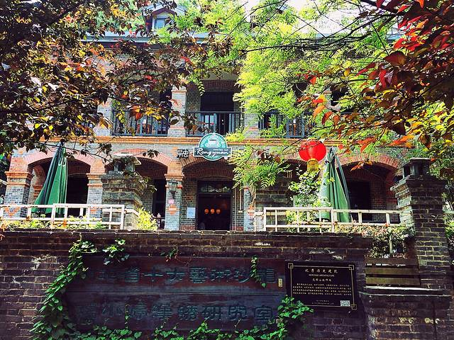

两江四岸：武汉的灵魂脉络
春季：江风拂面 夏季：夜游江景 秋季：江面澄澈 冬季：薄雾晨景
黄鹤楼：天下绝景
始建于三国时期的黄鹤楼，是“江南三大名楼”之一。现楼为1985年重建，高51.4米，共五层，飞檐翘角、黄瓦红柱，尽显古典建筑之美。登楼远眺，长江大桥如巨龙横跨江面，汉口、武昌两岸风光尽收眼底，“黄鹤一去不复返，白云千载空悠悠”的诗意在此刻具象化。

汉口江滩：城市绿肺
全长7.8公里的汉口江滩，是武汉人最爱的休闲地。江滩内种植了近百种植物，春季樱花、桃花盛开，夏季绿树成荫，秋季芦苇飘荡，冬季芦苇荡泛着金黄。傍晚时分，江风习习，看轮渡穿梭于长江之上，岸边散步的人群、放风筝的孩童、弹唱的艺人，构成了最鲜活的江城生活图景。
人文与自然：武汉的双面风情

昙华林：文艺与古早的碰撞
这条长仅1.2公里的老街，藏着武汉的慢生活。青石板路两旁，是百年老建筑与文艺小店的交融——哥特式的教堂、民国时期的公馆、网红咖啡馆、手作工坊错落有致。在这里，既能看到老武汉的烟火气，又能感受到年轻的文艺气息，适合慢慢闲逛、拍照打卡。

东湖：中国最大城中湖
东湖面积是西湖的6倍，水域辽阔，湖光山色相映成趣。东湖绿道全长101.98公里，是骑行、散步的绝佳选择；磨山景区内种植了大片樱花树，每年3-4月，樱花盛开时，如云似霞，吸引数百万游客前来；听涛景区则以人文景观为主，行吟阁、屈原纪念馆等景点承载着深厚的文化底蕴。